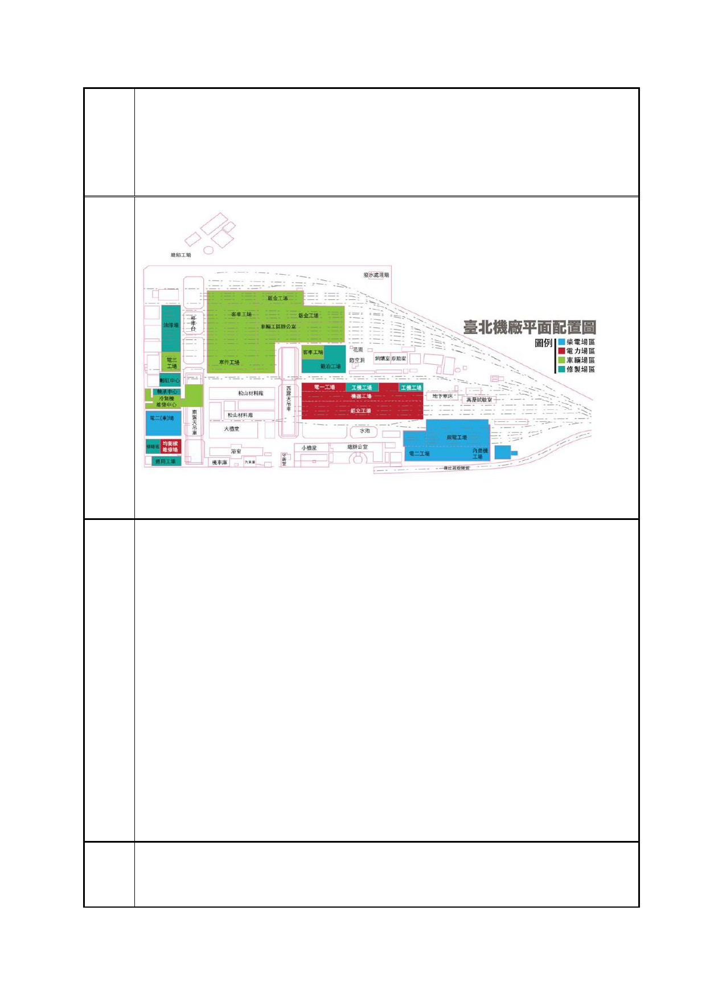

臺北市都市計畫委員會 公民或團體陳情意見綜理表
「變更臺北市信義區逸仙段二小段 33 地號等 21 筆土地（原臺北機廠）
案
名
工業區為創意文化專用區、特定專用區、道路及綠地用地主要計畫案」
及「擬定臺北市信義區逸仙段二小段 33 地號等 21 筆土地（原臺北機
廠）創意文化專用區、特定專用區、道路及綠地用地細部計畫暨劃定
都市更新地區計畫案」
移車台、東露天吊車左側的廠房即將被拆除，改建大樓
暫緩審議！台鐵懸崖勒馬、行政院重新界定台北機廠保存方針！
在去年進入台北機廠地目變更案進入審議之際，行政院院長在聽取交
通部「臺鐵資產活化利用」計畫後曾表示，臺灣有很多鐵道迷，將臺
鐵在處理資產活化業務很重要的思考點，此外，鐵道所串連起來的觀
光產業也具有很大的市場潛力，因此特別請交通部在此部分發揮創意
加以規劃。行政院既然特別強調鐵道文史的重要性，那麼台鐵局更應
該恪守職責將臺北機廠的未來放置在文史資產活化的框架中重新規
畫，且過程應參照前述幾點的訴求，廣邀民間團體重新進行規劃，而
非閉門紙上談兵。
再者，臺鐵連年虧損自應先確認原因，再求其止血方案，若恣意以變
賣資產方式開源，只怕非但止不了血，連最珍貴的老本都因此遭到破
壞，反而是自廢武功，喪失永續發展的可能。因此，我們希望台鐵能
儘速徹案，由行政院出面協調以專案方式，讓台北機廠的開發能守住
文史和開發分流的界線，各自適切發展，才能真正替全民守護臺北機
廠和鐵路這兩大公共資產！
我們的願望!
1. 全區保存臺北機廠，使其成為「活」的鐵道歷史博物館園區！
1935 年興建的臺北機廠，曾經是東亞最先進的火車維修工廠！歷史
第 92 頁/共 154 頁